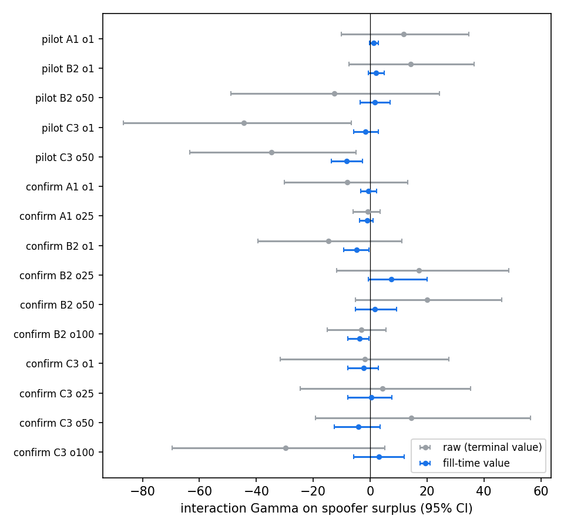

Figure 1. Seed-paired effects with bootstrap 95% CIs, standard surplus measure. Grey: pilot. Blue: confirmation on fresh seeds.
a1_iceberg_spoofing)Abstract. In enforcement cases, spoofers often submit the order they really want filled (the genuine leg) as an iceberg, while the spoof order on the other side is fully displayed. We ask whether hiding the genuine leg makes spoofing more effective against heuristic-belief-learning (HBL) traders. The setting is the market environment of Gu et al. (2024), where the spoofer's own visible sell order works against its spoof bid. We rebuilt the order book with price–time priority, synthetic icebergs, and HBL agents that learn only from public order and trade records. We then ran 34,800 seed-paired simulations in three liquidity environments: an exploratory pilot and a pre-specified confirmation on fresh seeds. All runs were repeated with a lower-variance surplus measure that values each fill at the fundamental estimate when it trades.
(1) No amplification. The interaction between spoofing and hiding on spoofer surplus is small in every cell (−8.3 to +7.3). The largest precise estimate is a mild substitution, −6.2 [−11.4, −1.6] in the least liquid market, about 14% of the gain from spoofing there. The pilot's apparent −35 was noise from the terminal fundamental. (2) Hiding crowds out learning sellers. Without any spoofing, an iceberg seller sells about 0.3 more units per market, mostly because HBL sellers stop undercutting a visible sell wall. Background surplus falls by 11–88 per market; at offsets 50–100 that is 3–5 times the hider's own gain. (3) Gu et al. replicate. Spoofing raises the midprice by +1 to +5 in the middle market (B2) and by +6 to +15 in the least liquid market (C3), and lowers HBL surplus by 5–9 per agent. With the low-variance measure, the profit from spoofing is significant in both less liquid markets, +17 to +37 for Gu et al.'s one-unit spoofer. (4) Mechanism. Two features make the interaction small by construction:
Wang and Wellman (2017) built an agent-based model of spoofing. Background traders who learn from the order book (HBL; Gjerstad and Dickhaut, 1998) are misled by large spurious bids, and spoofing shifts prices and transfers surplus. Wang, Hoang, Vorobeychik and Wellman (2021) moved this analysis into strategic equilibrium using empirical game-theoretic analysis (EGTA; Wellman, 2006): background traders choose between learning and non-learning strategies, and the paper studies cloaking and more robust learning variants. Gu et al. (2024) showed that less liquid markets are more spoofable. They also made the observation that motivates this project: the spoofer's own visible sell order enters HBL beliefs like a market maker's ask and partly offsets the spoof.
A1 keeps Gu et al.'s environment (agents, parameters and their liquidity grid) and changes one thing: whether the genuine sell order is displayed in full or hidden as an iceberg. The question is whether removing that "self-offsetting" display amplifies spoofing.
All arms share every random draw for a given seed: fundamental path, arrivals, private values, trader randomness, and the order of actions within a time step.
| Arm | Genuine sell | Spoof bid |
|---|---|---|
| base | none (no strategic seller) | – |
| nsV1 / spV1 | 1 unit, visible (Gu et al.'s spoofer) | no / yes |
| nsV / spV | G = 10 units, fully visible | no / yes |
| nsI / spI | G = 10 units, iceberg: shows 1, refills at the back of the queue | no / yes |
Interaction: Γ = (spI − nsI) − (spV − nsV), computed seed by seed. Confidence intervals are seed-level bootstrap 95% intervals.
Runs:
| Change | Why it matters for icebergs |
|---|---|
| Price–time priority within a price level | Upstream breaks ties by order id. Queue position is the main cost of an iceberg refill. |
| Each trade executes at the resting order's price, level by level | Upstream clears all of a step's trades at one price, which hides how an iceberg is consumed level by level. |
| Multi-unit partial fills that leave historical records unchanged | Upstream shrinks the stored order on a partial fill, so learners would see the wrong displayed size. |
| Self-trade prevention; matching on arrival | The spoof bid can never trade against the spoofer's own ask. |
| HBL learns only from a public ledger: price, displayed size, time, fills and cancel time | Hidden size and order ownership are never visible. Withdrawal times come from public cancels. |
| For multi-unit orders, the unfilled remainder counts as rejected | Identical to upstream for unit orders. Upstream's own pricing optimizer is used unchanged. |
| Spoofer events always scheduled; ignored when the spoofer is absent | Fixes a pairing bug: otherwise the spoofer's presence changes the order of actions within a step. |
| Fill-time valuation (Section 6) | A lower-variance surplus measure with the same expectation as the standard one. |
Seven tests check the implementation:
HBLAgent.belief_function on unit-order histories;| Effect of spoofing, DV = spV − nsV (confirmation) | A1 | B2 | C3 |
|---|---|---|---|
| Midprice − r̃, offset 1 → 100 | ≈ 0 | +1.2 → +5.2* | +5.9 → +15.0* |
| HBL surplus per agent | −6 to −12* | −8 to −13* | −7 to −10 |
| Spoof units executed per market | 0.2–0.3 | 0.3–0.4 | 0.3–0.4 |
* CI excludes 0 in every cell of the row (C3 HBL: all cells but offset 50). The price impact grows as liquidity falls and as the genuine ask moves away from the estimate, as in Gu et al.
The pilot showed a negative interaction in C3, −44.5 [−87, −5] at offset 1 and −34.7 [−67, −3] at offset 50. In the confirmation, no cell excluded 0 (C3: −1.8 at offset 1, +14.5 at offset 50). Figure 1, left panel, shows all cells.
When the genuine ask lies outside the prices HBL ever considers (A1 at offsets 50 and 100), the visible and iceberg arms are identical seed by seed. In those cells, displayed size has no effect at all.
Hiding the genuine leg makes the strategic seller sell about 0.3 more units per market (Figure 1, right panel). HBL sellers sell 0.3–0.46 fewer units, and total background surplus falls (Figure 1, middle panel). This happens with or without spoofing.
Figure 1. Seed-paired effects with bootstrap 95% CIs, standard surplus measure. Grey: pilot. Blue: confirmation on fresh seeds.
Implementation. All tests pass, the arms are equal exactly where theory says they must be, and Gu et al.'s gradient is reproduced. We found no sign that the null result comes from the code.
Measurement noise. Standard surplus is cash + position × rT. All arms of a seed share rT, so the interaction contains a term Γ(position) × (rT − mean). This term has mean about 0, but it explains 90–99% of the seed-level variance of Γ. The pilot ran 60 interaction tests and 3 excluded 0, exactly the number expected by chance.
Design. The genuine ask is priced at r̃t + offset, and r̃t is the conditional expectation of rT. Each unit sold therefore earns the offset in expectation, so hiding or spoofing can change spoofer profit only through how many units fill. Spoofing adds almost the same number of fills with either display: in C3 at offset 1, +0.60 units when visible and +0.58 as an iceberg. Γ(units sold) is within ±0.1 in every cell, so the interaction on profit is bounded by roughly offset × 0.1.
Mechanism in HBL beliefs. HBL estimates the probability that a price p trades as accepted evidence divided by total evidence.
The spoof bid always sits below the genuine ask (q < a), so the two never appear in the same belief at the same price. They interact only through the agent's choice of price. Hiding the genuine leg mainly changes how HBL sellers compete with it: a large unfilled visible ask is rejection evidence for selling at or above a, so they undercut it. The spoof acts mainly on HBL buyers, through rejection evidence below the bid.
For each trader we add a surplus measure that values every filled unit at the estimate in force when it trades: Σ side · q · (r̃t − p), plus private value for background traders. A fill at time t depends only on information up to t, and E[rT | information at t] = r̃t, so the new measure has the same expectation as the standard one without the terminal-value noise. The simulations are unchanged. We re-ran both seed sets and checked five claims written down before the rerun.
| # | Pre-specified claim | Outcome |
|---|---|---|
| 1 | Every original output is reproduced | Met: 34,800 of 34,800 runs identical. |
| 2 | Same expectation as the standard measure | Met: the difference excludes 0 in 1 of 15 cells. That cell (pilot C3, offset 1) was the one picked for being significant. |
| 3 | Per-seed SD of Γ at least 3× smaller | Mostly met: 12 of 15 cells show a 4–15× reduction. The other 3 show 1.9–2.9×; these cells were already low-noise. |
| 4 | C3 Γ at offsets 1 and 50 includes 0 and lies within ±15 | Partly met: offset 1 holds on both seed sets; offset 50 is within ±15 but excludes 0 (see below). |
| 5 | Hiding without spoofing lowers background surplus; the hider gains about offset × extra units | Met in 11 of 12 B2/C3 cells (−11 to −88). The hider's gain matches offset × extra units, e.g. C3 offset 50: +16.0 vs +13.4; offset 100: +17.2 vs +18.5. |
| Γ on spoofer surplus, C3 | Pilot | Confirmation | Pooled (800 seeds) |
|---|---|---|---|
| Offset 1, standard measure | −44.5 [−87, −6]* | −1.8 [−32, +30] | −23.2 [−50, +2] |
| Offset 1, fill-time measure | −1.6 [−6.1, +2.8] | −2.3 [−8.1, +2.9] | −2.0 [−5.7, +1.5] |
| Offset 50, standard measure | −34.7 [−65, −5]* | +14.5 [−19, +58] | −10.1 [−32, +17] |
| Offset 50, fill-time measure | −8.3 [−13.7, −2.8]* | −4.2 [−12.3, +3.4] | −6.2 [−11.4, −1.6]* |

Figure 2. Γ on spoofer surplus in every non-degenerate cell. Grey: standard measure. Blue: fill-time measure. Intervals shrink 4–15× in most cells.
Where the −6 comes from (C3, offset 50, 800 seeds; spoofer surplus split by leg):
This is consistent with the crowding-out channel: when the sell wall is hidden, HBL sellers are less aggressive, so they undercut less and also hit the spoof bid less often. That step is not measured directly.
Exploratory findings (not pre-specified).
Limitations.
Next steps.
All code, tests, summaries and figures are at github.com/Amtyro/quant-agent, folder
a1_iceberg_spoofing. The design notes and pre-specified claims are in experiments/A1_DESIGN.md;
a fuller diagnosis is in experiments/A1_DIAGNOSIS.md. Runs are deterministic given the seed. The
confirmation design takes about one hour on 15 worker processes. The code uses PyMarketSim's HBLAgent
unmodified.
Bessembinder, H., Panayides, M., & Venkataraman, K. (2009). Hidden liquidity: An analysis of order exposure strategies in electronic stock markets. Journal of Financial Economics.
Boulatov, A., & George, T. J. (2013). Hidden and displayed liquidity in securities markets with informed liquidity providers. Review of Financial Studies.
Buti, S., & Rindi, B. (2013). Undisclosed orders and optimal submission strategies in a limit order market. Journal of Financial Economics.
Byrd, D. (2022). Learning not to spoof. 3rd ACM International Conference on AI in Finance (ICAIF).
Cebiroglu, G., & Horst, U. (2015). Optimal order display in limit order markets with liquidity competition. Journal of Economic Dynamics and Control.
Debie, P., et al. (2023). European Financial Management (spoofing cases and order types).
Esser, A., & Mönch, B. (2007). The navigation of an iceberg: The optimal use of hidden orders. Finance Research Letters.
Frey, S., & Sandås, P. (2017). The impact of iceberg orders in limit order books. Quarterly Journal of Finance.
Gjerstad, S., & Dickhaut, J. (1998). Price formation in double auctions. Games and Economic Behavior.
Gu, A., Wang, Y., Mascioli, C., Chakraborty, M., Savani, R., Turocy, T. L., & Wellman, M. P. (2024). The effect of liquidity on the spoofability of financial markets. 5th ACM International Conference on AI in Finance (ICAIF).
Liu, B. (2024). Agent-based Modeling and Market Microstructure. PhD thesis, King's College London.
Liu, B., Polukarov, M., Ventre, C., Li, L., Kanthan, L., Wu, F., & Basios, M. (2022). Analysis on the impact of iceberg orders in financial markets. 4th Games, Agents, and Incentives Workshop (GAIW-22).
Verhulst, & Pennings (2025). Capital Markets Law Journal (spoofing enforcement cases).
Wang, X., Hoang, C., Vorobeychik, Y., & Wellman, M. P. (2021). Spoofing the limit order book: A strategic agent-based analysis. Games, 12(2), 46.
Wang, X., & Wellman, M. P. (2017). Spoofing the limit order book: An agent-based model. Proceedings of the 16th International Conference on Autonomous Agents and Multiagent Systems (AAMAS).
Wellman, M. P. (2006). Methods for empirical game-theoretic analysis. Proceedings of the 21st National Conference on Artificial Intelligence (AAAI).
Zotikov, D., & Antonov, A. (2021). Quantitative Finance (native and synthetic iceberg orders).